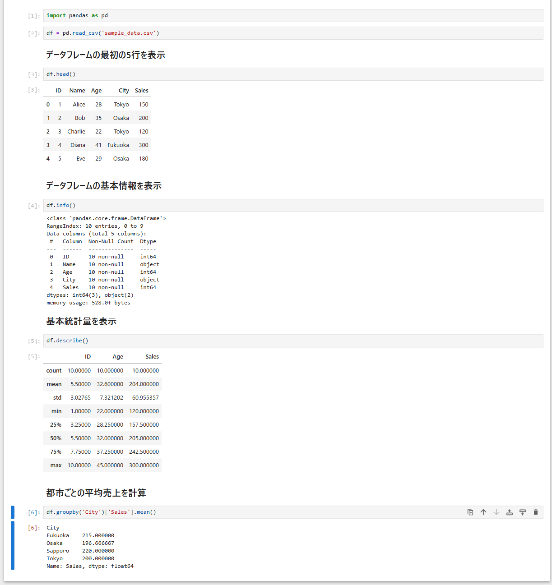
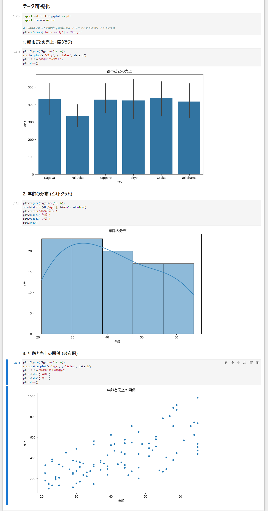
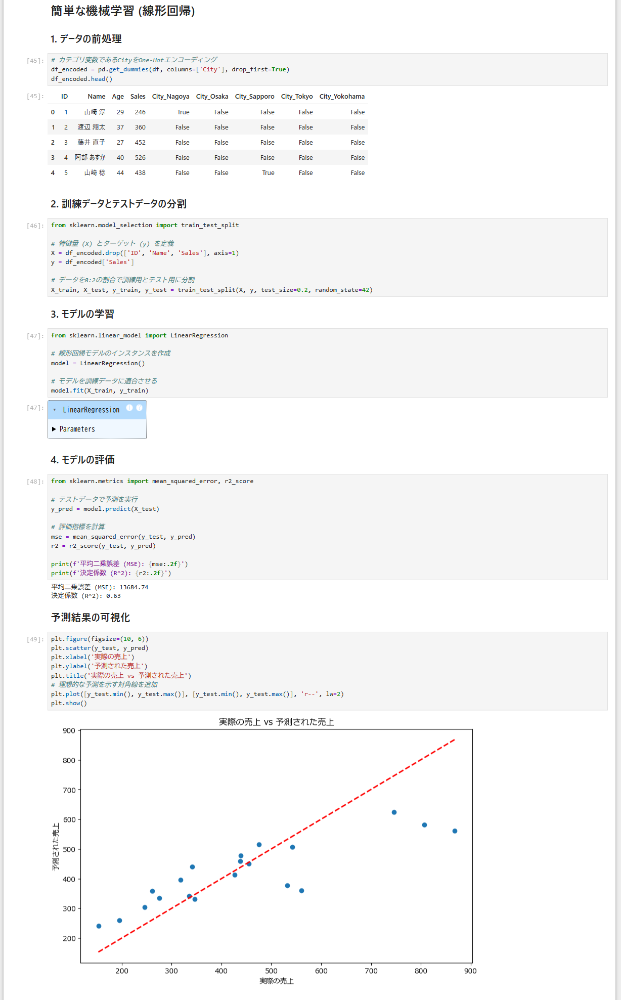

CSVデータを用いた基本的なデータ分析環境の構築から、可視化、機械学習までの詳細な手順。
「簡単なデータ分析を試したい」という要望に応え、散布図で傾向を把握できるよう、分析対象となるサンプルデータを作成した。
使用したプロンプト:
「簡単なデータ分析を試したいので、サンプルデータを作成してください。データはCSV形式で、ID、Name、Age、City, Salesの列を含めてください。特に、年齢と売上の間には何らかの相関が見られるようにして、後で散布図で傾向を分析できるようにしてください。データ件数は100件程度でお願いします。」
sample_data.csvID,Name,Age,City,Sales
1,山崎 淳,29,Nagoya,246
2,渡辺 翔太,37,Fukuoka,360
3,藤井 直子,27,Fukuoka,452
4,阿部 あすか,40,Fukuoka,526
5,山崎 稔,44,Sapporo,438
6,小林 里佳,21,Tokyo,180
7,中村 千代,28,Osaka,290
8,清水 直子,25,Sapporo,337
9,山本 直人,65,Nagoya,473
10,佐々木 七夏,29,Fukuoka,253
11,加藤 千代,39,Sapporo,426
12,渡辺 直樹,31,Sapporo,312
13,清水 知実,22,Nagoya,153
14,岡本 智也,25,Yokohama,208
15,吉田 結衣,37,Sapporo,373
16,清水 くみ子,54,Tokyo,280
17,鈴木 春香,23,Tokyo,368
18,三浦 加奈,41,Yokohama,536
19,坂本 和也,52,Nagoya,475
20,小林 千代,32,Yokohama,234
21,石井 香織,48,Osaka,654
22,石井 春香,56,Osaka,291
23,鈴木 康弘,42,Sapporo,341
24,高橋 美加子,39,Nagoya,292
25,佐藤 香織,58,Tokyo,379
26,佐藤 修平,55,Yokohama,267
27,岡田 稔,43,Osaka,356
28,山本 修平,44,Osaka,577
29,加藤 篤司,26,Osaka,317
30,田中 陽子,35,Nagoya,146
31,吉田 さゆり,43,Sapporo,455
32,佐藤 舞,35,Sapporo,532
33,田中 幹,23,Nagoya,387
34,森 修平,48,Nagoya,439
35,坂本 晃,38,Nagoya,346
36,小林 直人,51,Sapporo,418
37,西村 智也,30,Tokyo,490
38,田中 裕美子,30,Nagoya,368
39,鈴木 千代,24,Fukuoka,215
40,佐藤 舞,51,Yokohama,542
41,井上 美加子,65,Tokyo,737
42,岡田 春香,21,Yokohama,257
43,小林 七夏,39,Osaka,237
44,鈴木 里佳,56,Osaka,405
45,森 英樹,57,Osaka,807
46,小川 加奈,30,Osaka,275
47,小林 陽一,23,Sapporo,133
48,池田 修平,58,Osaka,711
49,木村 亮介,46,Fukuoka,270
50,山下 結衣,24,Tokyo,191
51,田中 結衣,30,Nagoya,153
52,渡辺 英樹,63,Yokohama,710
53,村上 千代,65,Tokyo,438
54,藤田 和也,35,Tokyo,335
55,佐藤 康弘,25,Fukuoka,134
56,山本 香織,44,Sapporo,331
57,中村 陽子,34,Tokyo,273
58,伊藤 香織,59,Fukuoka,447
59,伊藤 美加子,35,Osaka,568
60,山崎 真綾,35,Nagoya,568
61,橋本 拓真,46,Osaka,711
62,中島 さゆり,40,Yokohama,624
63,太田 知実,29,Osaka,375
64,高橋 太郎,31,Tokyo,169
65,木村 真綾,21,Fukuoka,249
66,山本 学,53,Yokohama,582
67,田中 桃子,48,Yokohama,202
68,坂本 晃,48,Yokohama,307
69,中村 充,58,Sapporo,887
70,佐藤 淳,29,Osaka,115
71,中川 修平,33,Sapporo,261
72,吉田 さゆり,65,Fukuoka,538
73,松田 翼,31,Yokohama,358
74,池田 あすか,59,Tokyo,868
75,小川 さゆり,65,Nagoya,986
76,鈴木 陽一,53,Nagoya,608
77,加藤 浩,24,Yokohama,195
78,伊藤 直樹,39,Yokohama,318
79,山本 あすか,33,Nagoya,222
80,清水 千代,49,Tokyo,535
81,田中 治,32,Nagoya,346
82,村上 治,22,Fukuoka,103
83,鈴木 明美,35,Fukuoka,320
84,山田 翔太,64,Nagoya,746
85,鈴木 桃子,41,Tokyo,470
86,清水 真綾,65,Fukuoka,506
87,前田 花子,44,Fukuoka,305
88,鈴木 太一,44,Sapporo,544
89,池田 七夏,59,Tokyo,914
90,長谷川 和也,21,Osaka,330
91,伊藤 花子,35,Nagoya,560
92,遠藤 桃子,51,Fukuoka,496
93,中村 真綾,45,Fukuoka,232
94,伊藤 結衣,64,Sapporo,624
95,鈴木 直樹,61,Nagoya,572
96,木村 美加子,55,Yokohama,786
97,加藤 充,53,Nagoya,513
98,田中 七夏,37,Fukuoka,286
99,伊藤 七夏,46,Yokohama,551
100,池田 直人,22,Tokyo,146
Fakerライブラリを使用し、Pythonスクリプトで生成。
Fakerライブラリのインストール:
python -m pip install Faker --user
python generate_data.py
generate_data.py の削除:
del generate_data.py
「sample_data.csvの分析をJupyter
Notebookで作成したい」というリクエストに基づき、データ分析ツールとしてのJupyterと、分析に必要なライブラリをインストールした。
使用したプロンプト:
「先ほど作成した
sample_data.csvを使って、Jupyter Notebookでデータ分析を行いたいです。まずは、そのための環境を構築してください。Jupyter Notebookと、データ分析に必要となるであろうpandasライブラリをインストールしてください。」
Jupyter Notebook / jupytext のインストール:
python -m pip install notebook --user
jupytextのインストール（.pyから.ipynbへの変換用）:
python -m pip install jupytext --user
データ分析ライブラリ (pandas) のインストール:
python -m pip install pandas --user
Jupyterカーネルの設定: Jupyter
Notebook実行時に発生したModuleNotFoundErrorを解決するため、Jupyterが使用するPython環境を明示的に登録した。
python -m ipykernel install --user --name=my-python-env --display-name="My Python Env"
Jupyter
Notebookのファイル破損問題（SyntaxError）を回避するため、Pythonスクリプトから変換する方式を採用した。
使用したプロンプト:
「Jupyter Notebookで作業を始めたいのですが、直接
.ipynbファイルを作成するとSyntaxErrorが発生して困っています。何か回避策はありますか？例えば、一度Pythonスクリプト（.py）として分析コードを書いて、それを.ipynbに変換する方法はどうでしょうか。その手順を教えてください。」
analysis.py を作成。
.ipynb ファイルへ変換:
python -m jupytext --to notebook analysis.py -o analysis.ipynb
analysis.ipynb (旧版),
analysis_v2.ipynb (旧版),
analysis.py を削除。
analysis_final.ipynb を
analysis.ipynb にリネーム。
del analysis.ipynb analysis_v2.ipynb analysis.py
move analysis_final.ipynb analysis.ipynb
df.info()の出力内容に関する質問（「これなに」）をきっかけに、作成したanalysis.ipynb内で基本的なデータ分析（探索的データ分析:
EDA）を実行した。
使用したプロンプト:
「Jupyter Notebookで
df.info()を実行したのですが、表示されたこの出力は何を意味しているのですか？この機会に、基本的なデータ分析（探索的データ分析）のやり方を教えてください。データの読み込みから、概要の把握、基本統計量の確認までの一連の流れをanalysis.ipynbに実装してください。」
pd.read_csv(),
df.head()
を用いてデータフレームを読み込み、最初の数行を確認。
df.info()
を用いて、データ型、非null値の数、メモリ使用量などを確認。
df.describe()
を用いて、数値データの平均、標準偏差、最小値、最大値などを確認。

「まずはデータ可視化で」というリクエストに応え、データの傾向を視覚的に把握するため、グラフを作成した。
使用したプロンプト:
「データ分析の次のステップとして、まずはデータを可視化して傾向を掴みたいです。
matplotlibとseabornを使って、analysis.ipynbにいくつかのグラフを追加してください。具体的には、「都市ごとの売上（棒グラフ）」「年齢の分布（ヒストグラム）」「年齢と売上の関係（散布図）」の3つをお願いします。」
可視化ライブラリのインストール:
python -m pip install matplotlib seaborn --user
analysis.ipynb に以下のグラフ作成コードを追加:

「簡単な機械学習も行いたい」という要望に基づき、売上を予測する線形回帰モデルを構築した。
使用したプロンプト:
「データ可視化で傾向が見えてきたので、簡単な機械学習モデルも試してみたいです。
scikit-learnを使って、年齢や都市などの情報から売上（Sales）を予測する線形回帰モデルを構築してください。データの前処理からモデルの学習、評価までの一連の流れをanalysis.ipynbに実装し、結果も可視化してください。」
機械学習ライブラリのインストール:
python -m pip install scikit-learn --user
analysis.ipynb に以下の処理コードを追加:

「ここまでやったことをhtmlで資料として見れるようにしてほしい」という要望から、作業内容をまとめたHTMLレポートを生成した。
使用したプロンプト:
「ここまでの作業内容（環境構築からデータ分析、機械学習まで）を、HTML形式のレポートとしてまとめてください。他の人が見ても分かるように、各ステップで行ったことの概要、実行したコマンド、そして分析結果の画像などを含めてください。最終的に
analysis.htmlというファイル名で出力されると嬉しいです。」
setup_and_analysis_summary.md の作成と更新:
HTML変換スクリプト
convert_to_html.py の作成と実行:
analysis_report.html を生成。
python convert_to_html.py
convert_to_html.py の削除:
del convert_to_html.py
Jupyter NotebookからのHTMLレポート生成:
analysis.html を生成。
python -m nbconvert --to html --execute analysis.ipynb
analysis_report.html (旧版) の削除:
del analysis_report.html